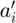
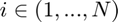
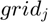
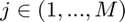
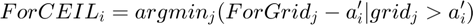
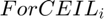
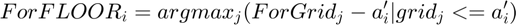
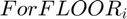
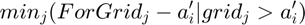
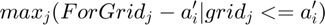

Match Borrowing Choices to Formal Grid
back to Fan's Dynamic Assets Repository Table of Content.
Contents
function [ar_a_grid_ceil_principle, ar_a_grid_ceil_wthr, ... ar_a_grid_floor_principle, ar_a_grid_floor_wthr] = ffs_for_br_block_match(varargin)
FFS_FOR_BR_BLOCK_MATCH formal borrowing blocks
Find Value just below or above each element of ar_a from ar_forbrblk. a vector of grid points, find for each element of ar_a the element of ar_forbrblk that is just above or just below.
- ar_a:  where 
- ar_forbrblk:  where 

 is the level of formal borrowing if joint formal + informal borrowing is chosen.

 is the level of formal borrowing if joint formal borrowing + informal savings is chosen.
@param ar_a boolean N by 1 single formal borrowing levels, could include interest rate or principle only depending on bl_b_is_principle
@param ar_forbrblk 1 by M array array of formal borrowing grid points. This always is just the formal borrowing levels principles only without interest rate.
@param ar_forbrblk_r array interest rates associated with equal-length ar_forbrblk.
@param bl_b_is_principle boolean solving with aggregate savings as savings + debt principles + interests, or just principles no interests. if true, principels only, no interests. Specifically:
- bl_b_is_principle = false: this means that the asset choices include both principle and interest rate. For here, that means ar_a vector elements include both principle and interest rate, but the ar_forbrblk vector always only include principles. So when matching, need to translate ar_forbrblk by appending interest rates on.
- bl_b_is_principle = false for abz, bl_b_is_principle = true for ipwkbz.
@return ar_a_grid_ceil_principle array N by 1 Solution to:

@return ar_a_grid_ceil_wthr array ar_a_grid_ceil_principle with interest rates specified to each borrowing formal level added
@return ar_a_grid_floor_principle array N by 1 element of the ar_forbrblk vector that are the elements right above each eelemnt of ar_a. Solution to:

@return ar_a_grid_floor_principle array ar_a_grid_floor_principle with interest rates specified to each borrowing formal level added
@example
[ar_a_grid_ceil, ar_a_grid_floor] = ...
ffs_for_br_block_match(ar_a, ar_forbrblk, ar_forbrblk_r, bl_b_is_principle);
@seealso
- Formal Borrowing Grid: ffs_for_br_block_gen
- Informal Interest Rates: ffs_r_inf
- Match Borrowing to Formal Grid: ffs_for_br_block_match
- Optimize Formal and Informal, Borrowing and Savings Joint Choices: ffs_fibs_min_c_cost
- Bridge Loan: ffs_fibs_inf_bridge
- Overall Optimization: ffs_fibs_min_c_cost_bridge
- Discrete Choices: ffs_fibs_identify_discrete
Default
% array of a choices % ar_a could be principles + interests, or principles only ar_a = -sort(rand([10,1])*20); % use defaults from block gen [ar_forbrblk, ar_forbrblk_r] = ffs_for_br_block_gen(); % if bl_b_is_principle is true, b is principles only, no interests. % bl_b_is_principle = false is the case for models like *abz* without % interpolation over cash-on-hand bl_b_is_principle = true; % Display bl_display_brblockmatch = true; default_params = {ar_a ar_forbrblk ar_forbrblk_r bl_b_is_principle bl_display_brblockmatch};
Parse Parameters
% numvarargs is the number of varagin inputted
[default_params{1:length(varargin)}] = varargin{:};
[ar_a, ar_forbrblk, ar_forbrblk_r, bl_b_is_principle, bl_display_brblockmatch] = default_params{:};
Adjust Inputs t
if bl_b_is_principle, then principle, with the assumption that ar_forbrblk. If bl_b_is_principle is false, that means the ar_a vector is principle and interest rates. Hence, need to convert ar_forbrblk which are principles to interests plus principles to be on the same scale as ar_a.
if (bl_b_is_principle) ar_forbrblk_use = ar_forbrblk; else ar_forbrblk_use = ar_forbrblk.*(1+ar_forbrblk_r); end
Show Details Step by Step
if (bl_display_brblockmatch) % show borrowing array disp('ar_a') disp(ar_a) % show borrowing formal blocks/grids disp('ar_forbrblk_use and ar_forbrblk'); disp([ar_forbrblk_use;ar_forbrblk]'); % all combination division disp('mt_a_dvd_grid = (ar_a./ar_forbrblk_use)'); mt_a_dvd_grid = (ar_a./ar_forbrblk_use); % ceiling for each disp('(mt_a_dvd_grid >= 1)'); (mt_a_dvd_grid >= 1) % If ceiling exists and cloest ceiling index % min_{j}( ar_forbrblk[j] - ar_a[i] | ar_forbrblk[j] > ar_a[i]) disp('[~, ar_max_a_on_grid_idx] = max((mt_a_dvd_grid >= 1),[], 2)'); [~, ar_max_a_on_grid_idx] = max((mt_a_dvd_grid >= 1),[], 2) % ar_forbrblk[argmin_{j}( ar_forbrblk[j] - ar_a[i] | ar_forbrblk[j] > ar_a[i])] disp('ar_a_grid_ceil = ar_forbrblk_use(ar_max_a_on_grid_idx)'); ar_a_grid_ceil = ar_forbrblk_use(ar_max_a_on_grid_idx) % ar_a_grid_ceil(ar_max_a_on_grid_idx == 1) = ar_forbrblk(0) % now floor, just one index less disp('ar_a_grid_floor = ar_forbrblk_use(max(ar_max_a_on_grid_idx - 1, 1))'); ar_a_grid_floor = ar_forbrblk_use(max(ar_max_a_on_grid_idx - 1, 1)) % ar_a_grid_floor(ar_max_a_on_grid_idx == 1) = % Dispaly tab_matched_grid = table(ar_a, ar_a_grid_floor', ar_a_grid_ceil'); tab_matched_grid.Properties.VariableNames = {'ar_a','ar_a_grid_floor','ar_a_grid_ceil'}; disp('ar_a_grid_floor: for borrow + for save'); disp('ar_a_grid_ceil: for + inf borrow'); disp(tab_matched_grid); end
ar_a
-0.4380
-2.8773
-3.8013
-3.9167
-5.8239
-6.5980
-9.9792
-13.6469
-16.8481
-18.8890
ar_forbrblk_use and ar_forbrblk
-19.0000 -19.0000
-14.5000 -14.5000
-10.0000 -10.0000
-7.0000 -7.0000
-5.5000 -5.5000
-4.0000 -4.0000
-2.5000 -2.5000
-1.0000 -1.0000
0 0
mt_a_dvd_grid = (ar_a./ar_forbrblk_use)
(mt_a_dvd_grid >= 1)
ans =
10×9 logical array
0 0 0 0 0 0 0 0 1
0 0 0 0 0 0 1 1 1
0 0 0 0 0 0 1 1 1
0 0 0 0 0 0 1 1 1
0 0 0 0 1 1 1 1 1
0 0 0 0 1 1 1 1 1
0 0 0 1 1 1 1 1 1
0 0 1 1 1 1 1 1 1
0 1 1 1 1 1 1 1 1
0 1 1 1 1 1 1 1 1
[~, ar_max_a_on_grid_idx] = max((mt_a_dvd_grid >= 1),[], 2)
ar_max_a_on_grid_idx =
9
7
7
7
5
5
4
3
2
2
ar_a_grid_ceil = ar_forbrblk_use(ar_max_a_on_grid_idx)
ar_a_grid_ceil =
Columns 1 through 7
0 -2.5000 -2.5000 -2.5000 -5.5000 -5.5000 -7.0000
Columns 8 through 10
-10.0000 -14.5000 -14.5000
ar_a_grid_floor = ar_forbrblk_use(max(ar_max_a_on_grid_idx - 1, 1))
ar_a_grid_floor =
Columns 1 through 7
-1.0000 -4.0000 -4.0000 -4.0000 -7.0000 -7.0000 -10.0000
Columns 8 through 10
-14.5000 -19.0000 -19.0000
ar_a_grid_floor: for borrow + for save
ar_a_grid_ceil: for + inf borrow
ar_a ar_a_grid_floor ar_a_grid_ceil
________ _______________ ______________
-0.43801 -1 0
-2.8773 -4 -2.5
-3.8013 -4 -2.5
-3.9167 -4 -2.5
-5.8239 -7 -5.5
-6.598 -7 -5.5
-9.9792 -10 -7
-13.647 -14.5 -10
-16.848 -19 -14.5
-18.889 -19 -14.5
Standard Quicker Solve
% Get Index [~, ar_max_a_on_grid_idx] = max(((ar_a./ar_forbrblk_use) >= 1),[], 2); % Get Values if (bl_b_is_principle) % Borrowing borrowing points, following formal grids, but add interests ar_a_grid_ceil_wthr = ... (ar_forbrblk_use(ar_max_a_on_grid_idx).*(1+ar_forbrblk_r(ar_max_a_on_grid_idx)))'; ar_a_grid_floor_wthr = ... (ar_forbrblk_use(max(ar_max_a_on_grid_idx - 1, 1)).*(1+ar_forbrblk_r(max(ar_max_a_on_grid_idx - 1, 1))))'; % Principles only, note ar_forbrblk_use = ar_forbrblk ar_a_grid_ceil_principle = ar_forbrblk_use(ar_max_a_on_grid_idx)'; ar_a_grid_floor_principle = ar_forbrblk_use(max(ar_max_a_on_grid_idx - 1, 1))'; else % Borrowing borrowing points, following formal grids, but add interests ar_a_grid_ceil_wthr = ar_forbrblk_use(ar_max_a_on_grid_idx)'; ar_a_grid_floor_wthr = ar_forbrblk_use(max(ar_max_a_on_grid_idx - 1, 1))'; % Principles only ar_a_grid_ceil_principle = ar_forbrblk(ar_max_a_on_grid_idx)'; ar_a_grid_floor_principle = ar_forbrblk(max(ar_max_a_on_grid_idx - 1, 1))'; end
Display
if (bl_display_brblockmatch) disp('ar_a_grid_ceil_principle'); disp(ar_a_grid_ceil_principle); disp('ar_a_grid_ceil_wthr'); disp(ar_a_grid_ceil_wthr); disp('ar_a_grid_floor_principle'); disp(ar_a_grid_floor_principle); disp('ar_a_grid_floor_wthr'); disp(ar_a_grid_floor_wthr); end
ar_a_grid_ceil_principle
0
-2.5000
-2.5000
-2.5000
-5.5000
-5.5000
-7.0000
-10.0000
-14.5000
-14.5000
ar_a_grid_ceil_wthr
0
-2.6125
-2.6125
-2.6125
-5.7475
-5.7475
-7.3150
-10.4500
-15.1525
-15.1525
ar_a_grid_floor_principle
-1.0000
-4.0000
-4.0000
-4.0000
-7.0000
-7.0000
-10.0000
-14.5000
-19.0000
-19.0000
ar_a_grid_floor_wthr
-1.0450
-4.1800
-4.1800
-4.1800
-7.3150
-7.3150
-10.4500
-15.1525
-19.8550
-19.8550
end
ans =
0
-2.5000
-2.5000
-2.5000
-5.5000
-5.5000
-7.0000
-10.0000
-14.5000
-14.5000